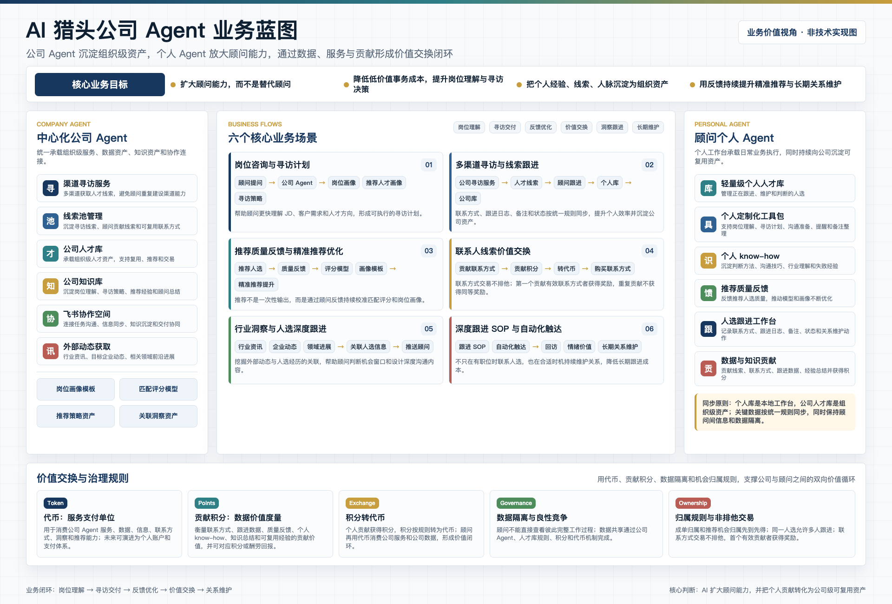
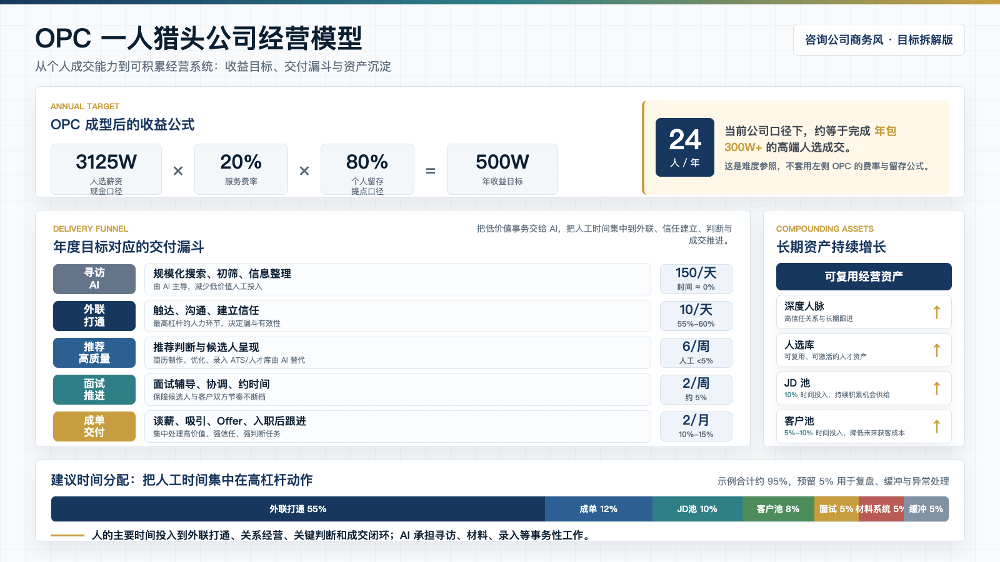

这不是一个单点 AI 工具方案，而是围绕人才库、寻访、推荐反馈、人选运营和 OPC 经营模型的系统性重构。
人才数据库、Sourcing、人选深度运营，是 AI 猎头公司成立前必须先回答的三个业务问题。
旧系统不是数据量的问题，而是控制权、架构和业务适配性的问题。
低价值高耗时的寻访动作，应该被统一 SOP、成本评估和数据闭环重新组织。
把寻访阶段和深度匹配阶段拆开，是控制成本和风控风险的关键。
行业知识库、行业与人才图谱、行业词典和咨询洞察，决定顾问能否为候选人提供独特价值。
公司沉淀组织资产，个人放大顾问能力，两端通过数据、服务、贡献和治理规则形成闭环。

个人 Agent 不应成为孤岛，而应把关键数据和知识沉淀到公司侧。
OPC 不是一个人做所有事，而是把低价值事务 AI 化，把人的时间集中在高信任、高判断、高成交环节。

这是可行性参照，不套用 OPC 的 20% 费率和 80% 留存公式。
OPC 的长期竞争力来自深度人脉、人选库、JD 池和客户池持续增长，而不是把事务性任务手工做完。
当公司 Agent 和个人 Agent 形成闭环，顾问就能获得接近 OPC 的经营杠杆：数据资产、反馈闭环、深度人脉和高质量成交能力。